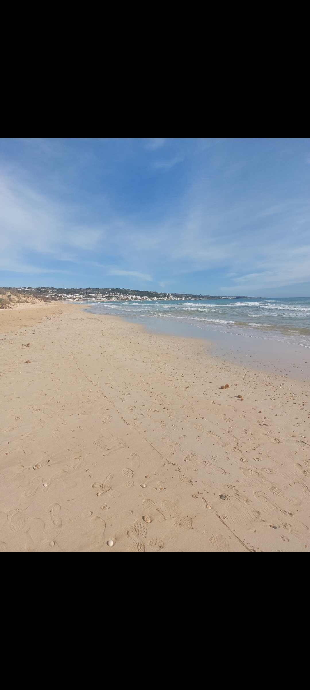
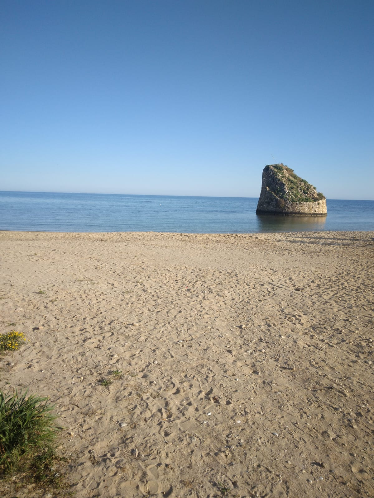
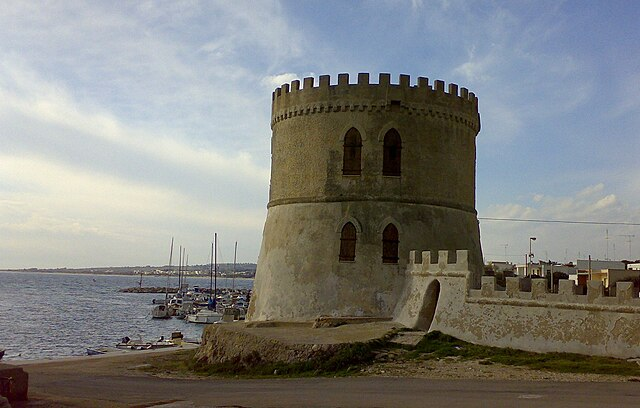
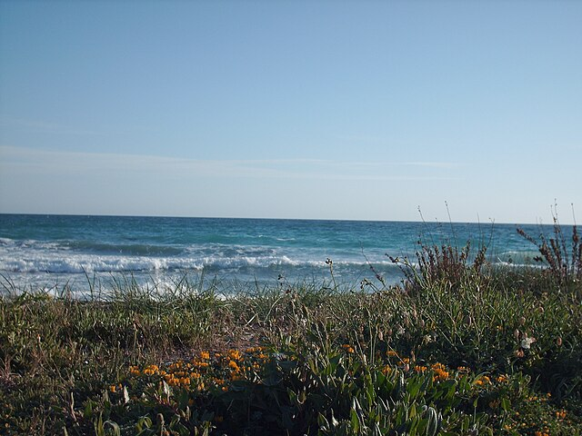
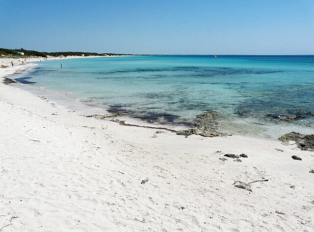
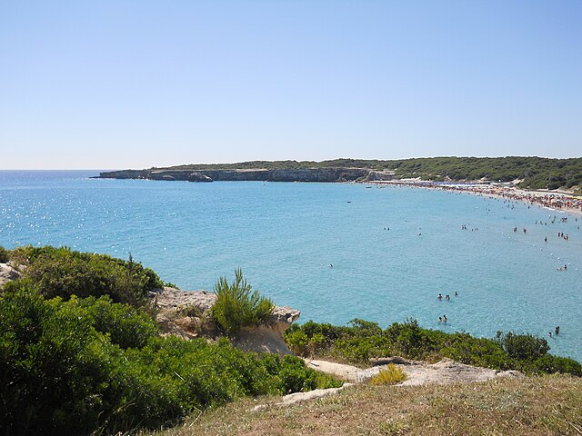
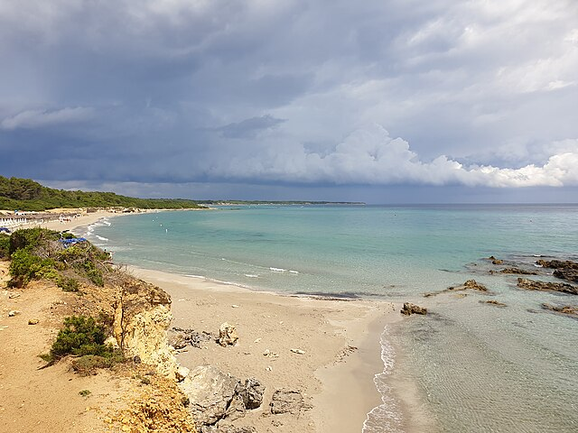

Il Salento è celebre per le sue spiagge da sogno, acque cristalline e sabbia dorata. Ecco una guida aggiornata alle località balneari più belle e ricercate, perfetta per chi cerca il meglio per la propria vacanza.
1. Pescoluse

Chilometri di sabbia bianca e fine, fondali bassi e acqua trasparente. Ideale per famiglie e bambini. Qui trovi stabilimenti attrezzati e tratti di spiaggia libera. Consiglio: Arriva presto in alta stagione!
2. Torre Pali

Piccolo borgo di pescatori con spiaggia dorata, mare calmo e la suggestiva torre costiera in acqua. Perfetta per chi cerca relax e servizi a portata di mano.
3. Torre Vado

Spiaggia ampia, sabbia soffice e fondali bassi. Ideale per famiglie, con lungomare ricco di locali, gelaterie e mercatini serali.
4. Lido Marini

Acqua limpida, sabbia dorata e stabilimenti moderni. Ottima per chi vuole alternare relax e divertimento, grazie a bar e sport acquatici.
5. Punta Prosciutto

Una delle spiagge più selvagge del Salento: dune bianche, mare turchese e natura incontaminata. Perfetta per chi ama la natura e la tranquillità.
6. Torre dell’Orso

Famosa per i suoi faraglioni “Le Due Sorelle”, sabbia fine e pineta ombreggiante. Ideale per giovani e famiglie, con tanti servizi e locali.
7. Baia dei Turchi

Una baia nascosta vicino Otranto, raggiungibile a piedi attraverso una pineta. Mare cristallino e atmosfera caraibica. Consigliata a chi cerca angoli incontaminati.
🌅 Consigli per vivere al meglio le spiagge del Salento:
• Porta sempre crema solare e acqua
• In alta stagione arriva presto per trovare posto
• Rispetta la natura: non lasciare rifiuti
• Alcune spiagge sono attrezzate, altre completamente libere
• Chiedi info su parcheggi e accessi ai locali o ai residenti
• Non perderti il tramonto sullo Ionio!
Vuoi scoprire altre spiagge o hai bisogno di consigli personalizzati? Contattaci, saremo felici di aiutarti a organizzare la tua vacanza perfetta nel Salento!
Vedi i nostri appartamenti